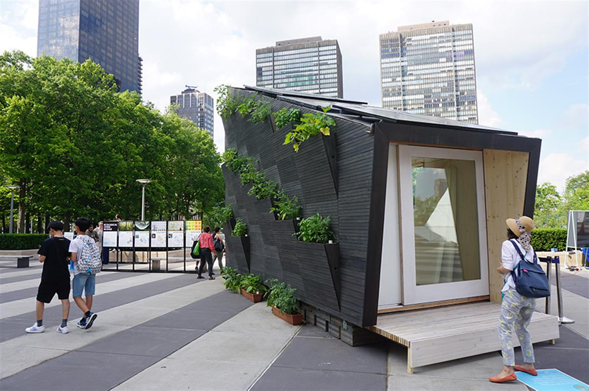

UN News/Matt Wells
UN Environment (UNEP) and Yale University's Ecological Living Module; a sustainable tiny house exhibited at UN Headquarters in New York.
They’re small, self-sustaining – and they could revolutionize the way we think about housing around the world, as building materials become scarcer.
Measuring just about 22-square-meters, or some 200-square-feet, a demonstration unit for the eco-friendly and affordable housing, debuted on the UN Plaza in New York this week.
This structure is a type of “tiny house” which is traditionally comprised of one room with a loft or pull-out bed, complete with hidden storage, and condensed amenities, such as a kitchen, that maximize the space available to live in.
The design, created by UN Environment and the Center for Ecosystems in Architecture at Yale University in the United States, in collaboration with UN-Habitat, is meant to get people thinking about decent, affordable housing that limits the overuse of natural resources and helps the battle against destructive climate change.
The design is created specifically to be compatible with New York’s seasonal climate of cold winters, and hot summers. New designs have also been drawn up to suit the climate in Quito, Ecuador, and another major world capital, Nairobi, in Kenya.
The design was created in collaboration with Gray Organschi Architecture.
SOURCE: UNITED NATIONS ENVIRONMENT PROGRAMME
UN SUSTAINABLE DEVELOPMENT GOALS
